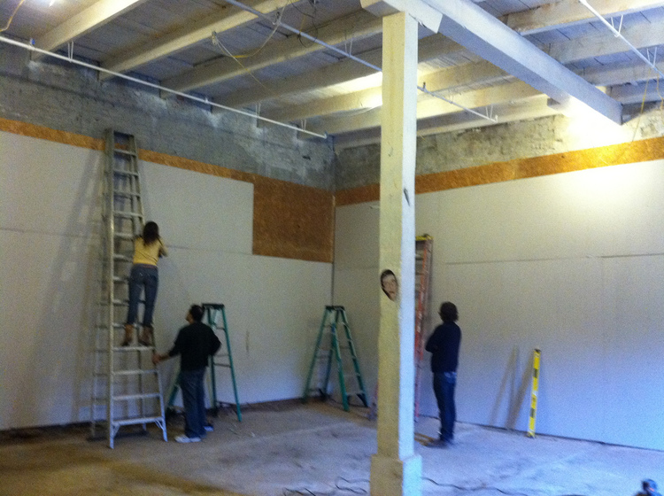

Little Berlin was founded on 2007 by Martha Savery and Kristen Neville-Taylor. Pushing aside what was originally their studio space and removing walls to put up new ones, they opened the gallery doors at the Berks Warehouse to a warm reception.
In 2009, the gallery, which up to this point had organized monthly exhibitions and dozens of events under the curation of only two individuals, became a collective of curatorial members. The new team included Robert "Tim" Panell, Tyler Kline, Masha Badinter, Beth Heinly, Alex Gartlemann, and Sam Belkowitz. Each member hailed from various disciplinary backgrounds, including sculpture, new media, performance, installation, and experimental art. Events at the space reflected this diversity in curatorial approach through hosting dozens of artists from the Philadelphia community and around the world in monthly exhibitions.
The new members will be artist-curators who will operate collectively on what’s shown at LB, says Savery. “They’re not expected to do the usual show-and-tell art work but will have a say in what we do as an organization…It will be good getting people in on the ground level. We’re viable here…Both Philadelphia and Little Berlin could become a destination.
—Little Berlin collectivizes!, Roberta Fallon, theartblog, February 10, 2009
By the end of 2010, Little Berlin's members decided it had outgrown its gallery within the Berks warehouse and needed to move to a new location at the Viking Mill. At the time, Viking Mill was five floors of hallway with a scattering of artist studios, practice spaces for bands, and a few machine shops. The new space designated for Little Berlin was otherwise a hole in the wall, in an unused part of the warehouse, but offered 1050 sq. feet of potential and an attached courtyard for outdoor events. The renovations of the space prompted the creation of the zine "How To Turn A Cave Into A White Box" which documented the six-months process by which members of Little Berlin changed a dilapidated warehouse space into a polished white wall gallery space.
Neville was there when I visited, with a group of neighborhood girls who had walked in the door and were drawing pictures at the small table in the entryway. The kids seemed to have decided Little Berlin was a worthy clubhouse to hang out in.
—Kensington ramble to Crane Arts, Little Berlin, Rebekah Templeton, Roberta Fallon, theartblog, November 20, 2010
With the renovations completed, Little Berlin reopened its doors in May 2011. Many of the exhibitions at the new location began to boast a convergence with internet-based artwork with more traditional artworks found typically inside an art gallery. This motif is one that set Little Berlin apart from other galleries in the city of Philadelphia, keeping openings on the cutting edge of new media. Additionally, Little Berlin’s members, often referred to as curatorial members, began playing within the boundaries of “curating” as art practice, exhibiting works inspired by or themselves databases (Flashflood, March 2012; >get>put, November 2012), displaying anonymously-made memes and products (PRRRSONA, September 2012; Repeat, April 2013), showing the work of faux artists (Limits and Demonstrations, October 2013), and even hosting a giant dionysian party complete with its own rock-based currency (Plato’s Porno Cave, January 2012; March 2013).
This is a gritty scene run by young people who want to do it themselves ... they look to each other for inspiration and advice
—Collective energy in North Philly, Roberta Fallon, theartblog, November 18, 2011
In 2012, member Angela McQuillan learned the Viking Mill landlord also owned the large vacant lot adjacent to the building and negotiated a multiple year rent-free lease in exchange for developing the plot of land. Through a successful Knight Arts Challenge Grant received in 2012-2013, Little Berlin built the Fairgrounds, a large outdoor community park and sculpture garden.
It was really important with this show to activate this space and utilize the fact that it was built over 130 years ago. It’s just nice to make a connection back to the space and tie the work back into the history and the idea of a place.” - John Shoemaker
—Kensington: Little Berlin Provides Art Space, Whitney R. Segel and Stephen M. Rose, Philadelphia Neighborhoods, April 25, 2012
.jpeg)
By 2013, many of the original members of Little Berlin had parted ways with the gallery, moving to new cities or onto other projects. Beth Heinly and Maria Dumlao moved on to join Vox Populi. Kelani Nichole founded Transfer Gallery in Brooklyn, focusing specifically on Internet-based art. New members assumed the programmatic direction including Lee Tusman, Marshall James Kavanaugh, Peter Erickson, Erin Bernard, Patrick Koziol, Eric Danger Clark, and Maddie Hewitt.. With this rotating cast of creative laborers picking up where others left off, Little Berlin grew into an epicenter of culture for its East Kensington home, and the city of Philadelphia as a whole.
As a recognized player in Philadelphia's art collective scene, Little Berlin's members participated in a large coordinated effort of "collectives acting collectively" through the CITYWIDE initiative.
Philadelphia's contemporary art landscape is distinctive for its culture of collectives: groups of artists who share energy and resources to pay rent, curate exhibitions, and inspire each other.
—Artists collectives joining forces in Philly for City Wide initiative, Peter Crimmins, Newsworks, February 26, 2013
In growing to become a widely recognized cultural center in Kensington, Little Berlin's members took its Fairgrounds project to a new level, hosting barbecues, film screenings, block parties, and the elusive mobile EverNever Night Market. It commissioned several sculptors to create the various artworks scattered around the grounds. Additionally, there were weekly gardening workshops led by its partner Growing Home.
.jpeg)
The prospect of an artist-run collective assuming control of an outdoor blighted space felt too good to be true. It seemed that this project was on the cusp of national recognition as an example of engaging urban renewal; but at that moment, the property was swiftly sold. Little Berlin hosted one last event in the Fairgrounds; a presentation on the impact it made on this space, and panel discussion from community leaders.
Little Berlin began converting a vacant lot ... into a community garden and ad hoc performance space ... The group has held block parties, installed sculpture, taught farming to children, and grown vegetables on the lot ... Now, the property’s owner ... has signed an “agreement of sale” with a prospective buyer
—In East Kensington, Housing Development To Replace Little Berlin’s “Fairgrounds”, Emma Jacobs, Hidden City, October 15, 2014
From there, Little Berlin stepped back from the ambitious Fairgrounds project, and focused its efforts on its regular indoor programming.
But the changing landscape of the neighborhood relentlessly challenged the nimble collective. A year prior to the Fairgrounds sale, Little Berlin's home at the Viking Mill was in jeopardy. The City of Philadelphia's licensing and inspections department deemed the building unfit for use. The mounting historical concerns over warehouse fires in the neighborhood, and the fly-by-night operations of many creatives was addressed through a stop work order.
Citing “numerous violations” of the city’s building, zoning, electrical and fire codes, the City’s Department of Licenses and Inspections Monday issued a Cease Operations/Stop Work Order at the Viking Mill building in Kensington.
—Viking Mill In Kensington Shut By L&I; Artists, Makers Out, Hidden City, October 21st, 2013
Fortunately, Little Berlin was able to return to its space after a long winter of uncertainty. It waited through the lengthy compliance process managed by the Viking Mill, and emerged in 2014 with an expanded exhibition space and programming. Enter The Annex, a space dedicated to temporary exhibitions, performances, film screenings, and one-off events. Once again growing with new curatorial members, Little Berlin achieved a landmark year in 2014, with nearly 50 events and 2,500+ visitors.
In the proceeding years, Little Berlin continued to take on new members and experiment with new art exhibitions and events. By this time, the collective had gained a reputation as a place to start an art career and get involved with the local community. The surrounding neighborhood continued to change, with new businesses and residents constantly raising the stakes for the future of the once abandoned industrial area.
With the onset of Covid-19 in March of 2020, the space was no longer able to host public events. There was no ability to pay rent or to hold the public's interest without a programmatic schedule. As a volunteer driven membership, who invested their own time and money, Little Berlin closed it's doors.